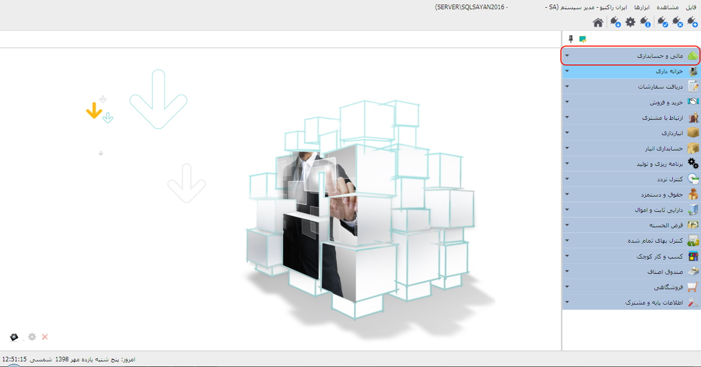
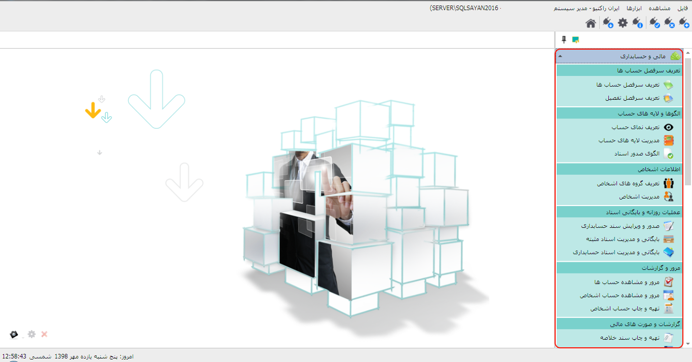

سیستم مالی و حسابداری نقش کلیدی در نرم افزار یکپارچه ی سایان دارد، یکی از ویژگی های حایز اهمیت نرم افزار سایان در طبقه بندی و کدینگ حسابها پشتیبانی از حسابداری چند لایه ای می باشد، با ایجاد لایه های حساب و تخصیص معین ها ی مناسب به لایه ها شما می توانید گردش حسابهای پروژه ها یا شعب را به تفکیک پروژه یا شعبه ثبت و نگه داری کنید، همچنین با استفاده از این لایه های حساب شما می توانید سود و زیان پروژه ها و شعب را نیز به تفکیک محاسبه و ثبت نمایید، یکی دیگر از بخش های مهمی که در این سیستم طبقه بندی شده است تعریف سر فصل یا کدینگ حسابها میباشد، لازم به ذکر است تمامی اسنادی که از سایر سیستم ها صادر می شوند به این بخش ارسال می شوند و در بخش های بایگانی و مدیریت اسناد مثبته و بایگانی و مدیریت اسناد حسابداری قابل مشاهده، ویرایش، تایید، برگشت از ارسال و یا حذف می باشند، همچنین در زیر بخش مرور و مشاهده حسابها می توانید با اعمال فیلتر های دلخواه گردش حسابهای انتخابی خود را مشاهده کنید مطابق شکل زیر در صفحه ی اصلی نرم افزار از منوی سمت راست سیستم مالی و حسابداری را انتخاب کنید:
پس از انتخاب سیستم مالی و حسابداری مطابق شکل زیر، زیر سیستم های این بخش نمایان می شوند :
برای آگاهی بیشتر راهنمای زیر سیستم های این بخش را مطالعه کنید.